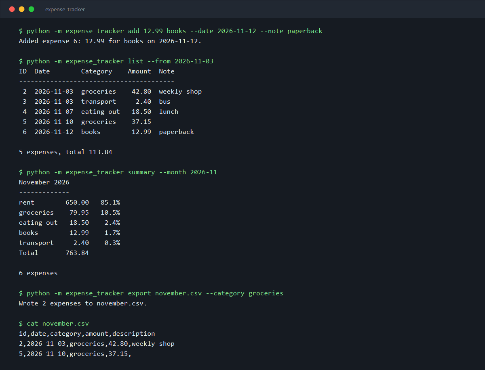
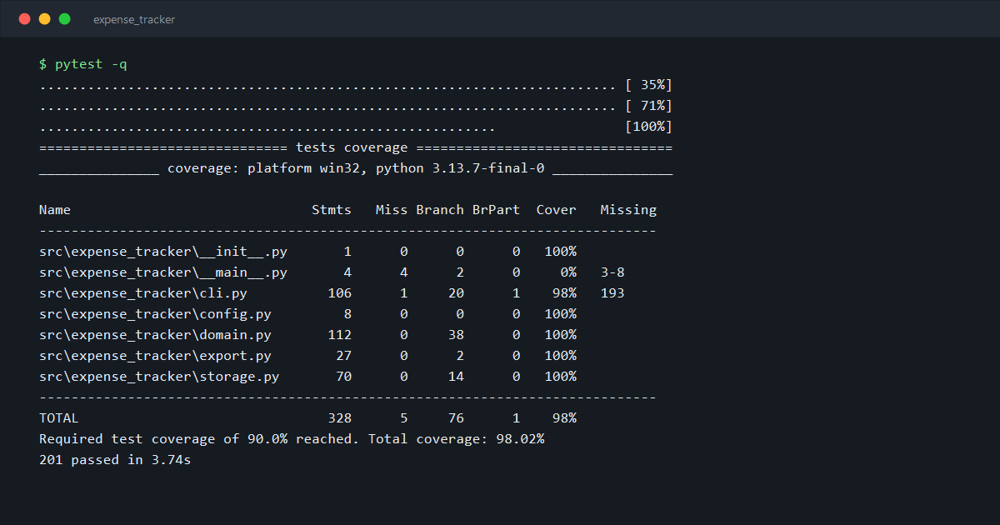

Expense Tracker CLI
A modular command-line expense tracker with monthly reports and CSV export.
Complete
Problem
Keeping track of personal spending needs only a few things: record an expense, look at past ones, see where a month's money went, and get the data out. The aim of this project was to build that as a small but complete application, with clean, modular code and tests, and not as one long script.
Approach
The application has three layers, and each one has a single job:
- Domain: the expense model and the rules (valid amounts, filtering, the monthly summary). It never reads a file or prints.
- Storage: one JSON file, read and written through a small interface that the domain defines.
- Command line: four commands (
add,list,summary,export) that turn arguments into calls on the domain and format the result.
Because the layers are separate, the domain is tested with an in-memory store, and the JSON file could be replaced by a database without touching the rules.
Execution instructions
There is no live demo, because this is a command-line tool. Run it on your own machine in one of two ways.
With Python (3.11 or newer), in the cloned project folder:
python -m venv .venv
.venv\Scripts\Activate.ps1 # macOS or Linux: source .venv/bin/activate
pip install -e .
python -m expense_tracker add 12.50 food --note lunch
python -m expense_tracker summary
With Docker (no Python needed): docker compose run --rm expense-tracker summary. Put any command after the service name; the data stays in a Docker volume between runs.
To try every command on a throwaway file, run python scripts/demo.py.
Tech stack
- Python 3.11+, standard library only at run time, so a fresh clone runs at once.
argparsefor the command line.Decimalfor money, so that sums are exact.pytestandrufffor tests and lint, with coverage enforced on every run.- Docker as a second way to run it, without installing Python.
Challenges and solutions
- Exact money. Floating-point numbers cannot hold most decimal amounts, so amounts are
Decimalvalues checked in one function, and stored as text in the JSON file. - Not losing data. The file is written to a temporary file and then swapped in, so a failed write cannot leave half a file. A damaged file stops the command with a clear error and is never overwritten.
- Safe CSV export. Text that a spreadsheet would run as a formula (starting with
=,+,-or@) gets a quote in front.
Results
The full demo session, from the real application:

| Check | Result |
|---|---|
| Tests | 201 pass |
| Coverage of the domain logic | 100% (the target was 80%) |
| Coverage of the whole package | 98% |
| Run-time dependencies | none |

What I learned
Path handling, Docker implementation, exporting in different formats, CI/CD best practices and the most important part, if you don't restrain your AI companion it will overcomplicate, overdeliver and produce a result that might be functional, pleasant on the eye but far more complicated than it has to be.